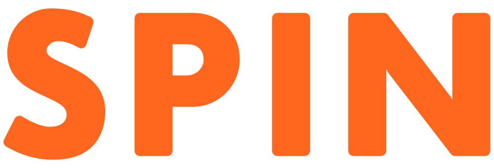
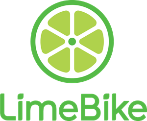
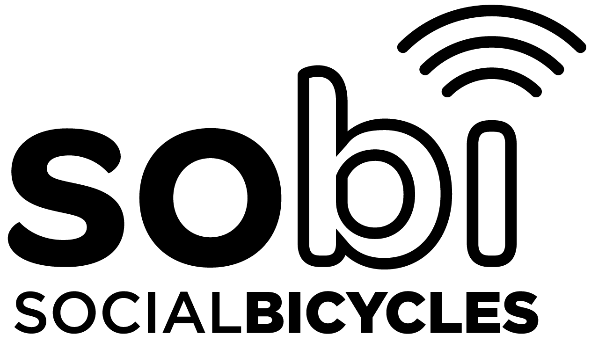
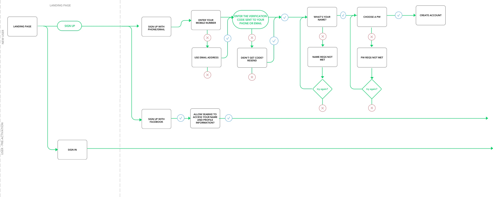
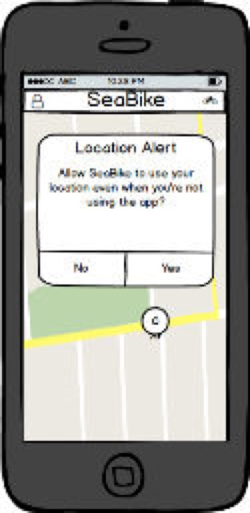
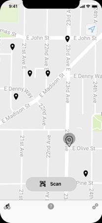
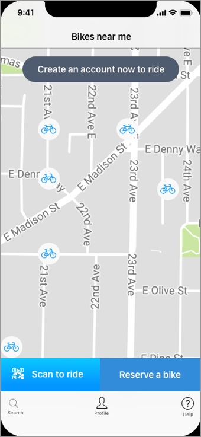
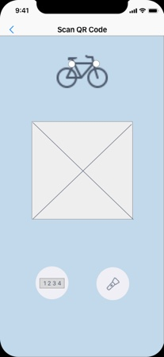
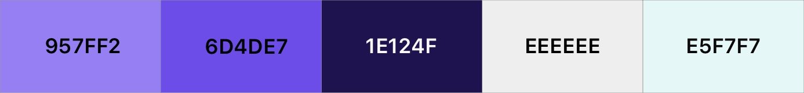

Bicycle sharing services are limited in their offerings. Enter Swiftly - a better bike-share. With a streamlined interface and a fleet of better bikes, Swiftly stands apart.
Problem
Seattle needed a bike sharing service that considered the terrain and rider safety.
Solution
A modern app showcasing a premium bike fleet that gets users on the road fast.
User Research
I conducted interviews with members of the community asking what features they wanted in a bike-sharing service and how often they would use it. People reported they would use the bike while visiting or getting around the city. They liked that it was cheaper than public transportation or a rental car.
With the old service, having to bring the bike back to a specified hub was a common complaint. People also reported that the bikes didn't have many gears.
Competitive analysis
I conducted a competitive analysis of two bike-share companies in Seattle and one company that does business nationwide. I researched the equipment used in bike sharing and examined the apps used to obtain the service. From this research, I gleaned several important insights.



The Good
Spin and LimeBike both use bright bold colors with a minimalist design.
LimeBike uses a left tab nav while Spin opted for bottom navigation.
SoBi gave users the option to reserve a specific bike.
The Bad
Spin and LimeBike's map discrepancies raised safety concerns with some riders.
No service offered a helmet with the bike.
All of the existing bike-share programs use 3-speed bikes.
User Persona
After analyzing competitors, I filtered my initial research into user personas. Of the three, the persona belonging to my most ideal user is Rachel.
Goals
Save time by not waiting on public transport
Get exercise during the day
Not be encumbered by a bike of her own
Build more flexibility into her day
Frustrations
Waiting for the bus
Riding a crowded bus
Sitting in traffic
Having to have a helmet with her if she plans to rent a bike
User Flows
I mapped out a user flow based on Rachel’s first time using the app, but the early stages were too complex. The user had to complete several steps before creating an account, all before they got to see how many bikes were nearby. Given that users may be at the bike, ready to scan and ride, this user flow was insufficient. It was re-worked and streamlined for the final design.

Wireframes
The early wireframes were an experiment on nav placement, layout, and interaction. I found that a bottom navigation bar tested better with users and implemented this feature.




Branding work
In the branding phase, I created a mind map to brainstorm a name. I selected "Swiftly" because it connotes movement and speed. Next, I developed the tagline “Where the better bikes are” to educate users about the higher quality bikes available in our fleet. The user swipes through screens promoting premium features to reinforce the product's quality.
I originally selected a palette of blues for Swiftly's branding. In testing, the palette was seen as cold and corporate, even dated. I brightened up the palette to feature a friendlier blend of purples with a desaturated jade green accent that provides depth and richness in the surrounding whitespace.

I wanted the logo to convey movement, but it also had to be legible from a distance. I included stylized lines coming from the top of the S so the appearance conveys swiftness, whether the user sees the fast S logo, or Swiftly in its long form.
User testing results
Users did not have any trouble renting a bike. There was some confusion over creating an account which led me to revise the conversion funnel. The user is now guided to create an account after scanning to ride, touching to reserve, or clicking the CTA. The product is ready to ship and subject to further testing.
Final Visual Design Prototype
iOS app design
user interviews
user personas
wireframes
branding
user testing
Seattle's discerning users needed a better bike-sharing app. I designed Swiftly with a clean interface, to make reserving and riding simple and intuitive. Map icons, colors, and conversion funnel have all been iterated on based on user feedback and testing. The product was created as part of my apprenticeship program and did not ship.